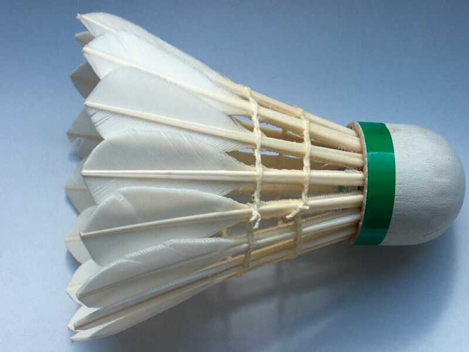

Qu'est-ce que le Badminton?

Groupe O'Tacos
Le Badminton pour tous !
Le Badminton pour tous !
Le badminton est un sport de raquette qui oppose soit deux joueurs ou joueuses (simples), soit deux paires (doubles), placés dans deux demi-terrains séparés par un filet. Les joueurs et joueuses, appelés badistes, marquent des points en frappant un volant à l'aide d'une raquette pour le faire tomber dans le terrain adverse. L'échange se termine dès que le volant touche le sol, ou s'il y a faute.

Le volant est un projectile aux propriétés aérodynamiques uniques qui lui donnent une trajectoire très différente des balles utilisées dans la plupart des sports de raquette. En particulier, les plumes créent une traînée bien plus importante , causant une décélération plus rapide. Le vent ayant beaucoup trop d'influence sur cette trajectoire, car la masse d'un volant est généralement de cinq grammes , le badminton est toujours pratiqué en intérieur car avec le vent, en extérieur, le volant peut changer de direction.
Le badminton actuel se joue à deux ou à quatre à l'aide d'un volant que l'on doit faire passer d'un côté à l'autre du filet sans faire de fautes. Les règles du badminton sont établies par la fédération internationale de badminton
Toutes les lignes font partie de la zone qu'elles délimitent.
Le terrain doit être un rectangle (dont les dimensions sont précisées dans
la section sur le terrain) tracé avec des lignes d'une largeur de 40 mm.
En simple, les couloirs latéraux ne font pas partie du terrain.
La zone de service est délimitée par :
Au début du set et chaque fois que le score du serveur est pair, le serveur sert à droite. Si le score du serveur est impair il sert à gauche. Le serveur doit toujours servir en croisé. Si le serveur gagne l’échange, il marque le point et sert dans la zone alternative (à gauche s'il a servi à droite ou à droite s'il a servi à gauche). Si le receveur gagne l’échange, il marque un point et prend le service.
Contrairement aux anciennes règles, il n’y a plus qu’une seule main. Cela signifie que lorsqu’une équipe prend le service, il n’y a qu’un joueur qui sert. Si l’échange est perdu, il n'y a pas de second service mais le service revient à l’adversaire. En double les joueurs doivent servir croisé mais ils n'ont pas le droit de servir dans le couloir du fond de court, sinon le volant est alors faute et le point revient à l'équipe adverse. Au début du set et quand son score est pair, le serveur sert depuis la zone de droite. Quand le score du serveur est impair, il sert depuis la zone de gauche. Lorsque le camp du serveur gagne l’échange, celui-ci marque un point et le même serveur sert depuis l’autre zone de service. Si c’est le camp du receveur qui gagne l’échange, c’est lui qui marque un point. Le camp du receveur devient serveur. Les positions (du côté gagnant et du côté perdant) restent alors inchangées.
Le badminton est souvent considéré comme un sport de détente
n'exigeant pas un haut niveau de qualités sportives.
On compare donc souvent le badminton au tennis, jugé plus difficile.
À l'époque les matches de badminton se jouaient en 15 points gagnants.
Ce comparatif figure dans le tableau ci-dessous :
| Sport | Tennis | Badminton |
|---|---|---|
| Match | Becker / Curren | Jian / Frost |
| Score | 6/3 6/7 7/6 6/4 | 16/18 15/10 15/8 |
| Durée totale du match | 3 h 18 min | 1 h 16 min |
| Durée réelle du jeu | 18 min | 37 min |
| % de jeu effectif | 9 % | 48 % |
| Nombre de points inscrits | 299 | 146 |
| Nombre de frappes par joueur | 1 004 | 1 972 |
| Nombres d'échanges par point | 3,4 | 13,5 |
| Distance parcourue | 3,21 km | 6,43 km |